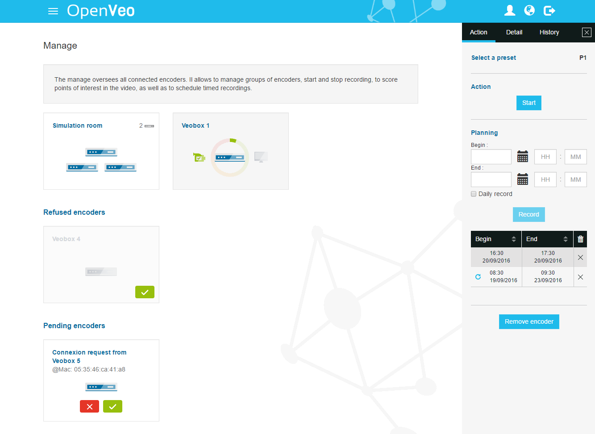

What's OpenVeo Manage ?
OpenVeo Manage is an OpenVeo plugin.
OpenVeo Manage adds the following features :
- The possibility to manage encoders :
- Create groups of encoders via drag-and-drop
- Create/remove scheduled jobs for groups and encoders with the possibility to be recurrent
- See the details of groups and encoders in a window like scheduled jobs, storage, history ...
- An access to a page to visualize the devices of a group
- Rename encoders and groups
- Select a specific preset option for records
- Start, tag and stop manually a record
- Remove manually an history element
- Remove an encoder
All data are synchronized in real-time in order to keep all users connected to the manage up to date.
Screenshots
Back end manage

Back end manage group detail